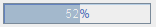
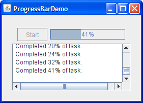
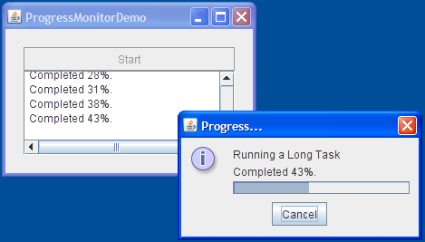

Lección: Usando Componentes Swing
Sección: Cómo Usar Varios Componentes
Cómo Usar Barras de Progreso
Algunas veces una tarea que se ejecuta dentro de un programa puede tomar un rato para completarse. Un programa fácil de usar proporciona alguna indicación al usuario de que la tarea está ocurriendo, cuánto podría tardar la tarea, y cuánto trabajo tiene todavía que ser hecho. Una forma de indicar el trabajo, y quizás la cantidad de progreso, es usar una imagen animada.
Otra forma de indicar el trabajo es establecer el cursor de espera, usando la clase
Cursor y el método
definido por el Component
setCursor. Por ejemplo, el siguiente código hace que el cursor de espera se muestre cuando
el cursor está sobre el contenedor (incluyendo cualquier componente que contiene que no tenga
cursor especificado):
container.setCursor(Cursor.getPredefinedCursor(Cursor.WAIT_CURSOR));
Para transmitir cuán completa es una tarea, puede usar una barra de progreso como esta:

Algunas veces no puede determinar inmediatamente la duración de una tarea de larga duración, o la tarea puede permanecer atascada en el mismo estado de finalización por mucho tiempo. Puede mostrar el trabajo sin progreso medible colocando la barra de progreso en modo indeterminado. Una barra de progreso en modo indeterminado visualiza una animación para indicar que el trabajo está ocurriendo. Tan pronto como la barra de progreso puede visualizar información con más significado, debería cambiarla de vuelta a su modo por defecto, el modo determinado. En la apariencia Java, las barras de progreso indeterminadas se parecen a esto:
Swing ofrece tres clases para ayudarle a usar barras de progreso:
-
JProgressBar - Un componente visible para mostrar gráficamente cuánto de una tarea total se ha completado. Vea Usar Barras de Progreso Determinado para más información y un ejemplo de usar una barra de progreso típica. La sección Usar el Modo Indeterminado le cuenta cómo animar una barra de progreso para mostrar la actividad antes de que el alcance de la tarea sea conocido.
-
ProgressMonitor - No es un componente visible. En su lugar, una instancia de esta clase monitoriza el progreso de una tarea y muestra un diálogo si es necesario. Vea Cómo Usar Monitores de Progreso para obtener detalles y un ejemplo del uso de un monitor de progreso.
-
ProgressMonitorInputStream -
Un flujo de entrada con un monitor de progreso adjunto, el cual monitoriza la lectura desde el flujo. Use
una instancia de este flujo como cualquiera de los otros flujos de entrada descritos en
E/S Básica. Puede obtener el
monitor de progreso del fljuno con una llamada a
getProgressMonitory configurarlo como se describe en Cómo Usar Monitores de Progreso.
Después de ver una barra de progreso y un monitor de progreso en acción, Decidir Si Usar Una Barra De Progreso O Un Monitor De Progreso puede ayudarlo a determinar cuál es apropiado para su aplicación.
Uso de Barras de Progreso Determinadas
Aquí tiene una foto de una pequeña aplicación de demostración que usa una barra de progreso para medir el progreso de una tarea que se ejecuta en su propio hilo:

Intente esto:
-
Pulse el botón Lanzar para ejecutar ProgressBar Demo usando
Java™ Web Start
(
descargue KDJ 7 o posterior). Alternativamente, para compilar y ejecutar el ejemplo usted mismo,
consulte el índice de ejemplos.

El código siguiente, de
ProgressBarDemo.java, crea y configura la barra de progreso:
//Donde las variables miembro son declaradas:
JProgressBar progressBar;
...
//Donde la IGU es construida:
progressBar = new JProgressBar(0, task.getLengthOfTask());
progressBar.setValue(0);
progressBar.setStringPainted(true);
El constructor que crea la barra de progreso fija los valores mínimos y máximos de la barra de progreso. Puede
también establecer estos valores con setMinimum and setMaximum. Los valores mínimos
y máximos usados en este programa son 0 y la longitud de la tarea, lo cual es típico de muchos programas y
tareas. Sin embargo, los valores mínimos y máximos de una barra de progreso pueden ser cualquier valor, incluso
negativos. El trozo de código también fija el valor actual de la barra de progreso a 0.
La llamada a setStringPainted causa que la barra de progreso visualize, dentro de sus límites, una
indicación textual del porcentaje de la tara que se ha completado. Por defecto, la barra de progreso visualiza
el valor devuelto por su método getPercentComplete formateado como un porcentaje, tal como
33%. Alternativamente, puede reemplazar lo predeterminado con una cadena diferente llamando a
setString. Por ejemplo,
if (/*...a mitad de camino hecho...*/)
progressBar.setString("¡A mitad de camino!");
Cuando el usuario pulsa Iniciar, una instancia de la clase interna Task es creada y
ejecutada.
public void actionPerformed(ActionEvent evt) {
startButton.setEnabled(false);
setCursor(Cursor.getPredefinedCursor(Cursor.WAIT_CURSOR));
done = false;
task = new Task();
task.addPropertyChangeListener(this);
task.execute();
}
Task es una subclase de
javax.swing.SwingWorker. La instancia Task hace tres cosas importantes para
ProgressBarDemo:
-
La instancia invoca el
doInBackgrounden un hilo separado. Aquí es donde realmente se ejecuta la tarea de ejecución prolongada. Usar un hilo en segundo plano en vez del hilo de envío de eventos evita que la interfaz de usuario se congele mientras se ejecuta la tarea. -
Cuando la tarea en segundo plano está completa, la instancia invoca el método
doneen el hilo de envío de eventos. -
La instancia mantiene un propiedad vinculada,
progress, que es actualizada para indicar el progreso de la tarea. El métodopropertyChangees invocadao cada vez queprogresscambia.
Vea
Hilos Worker y el hilo SwingWorker en la
Lección: Concurrencia en Swing para obtener más información sobre
SwingWorker.
La tarea en segundo plano en ProgressBarDemo simula una tarea real informando de cantidades
aleatorias de progreso en intervalos aleatorios. El método propertyChange responde a los cambios
en la propiedad progress de la tarea actualizando la barra de progreso:
public void propertyChange(PropertyChangeEvent evt) {
if (!done) {
int progress = task.getProgress();
progressBar.setValue(progress);
taskOutput.append(String.format(
"Cpmpletado el %d%% de la tarea.\n", progress));
}
Cuando la tarea en segundo plano está completa, el método done de la tarea restablece la barra de
progreso:
public void done() {
//Le dice al oyente del progreso que pare de actualizar la barra de progreso.
done = true;
Toolkit.getDefaultToolkit().beep();
startButton.setEnabled(true);
setCursor(null); //apaga el cursor de espera
progressBar.setValue(progressBar.getMinimum());
taskOutput.append("¡Hecho!\n");
}
Note que el método done establece el campo done a true, previniendo a
propertyChange de hacer más actualizaciones a la barra de progresos. Esto es necesario porque las
actualizaciones finales a la propiedad progress pueden ocurrir después de que done
sea invocada.
Usar el Modo Indeterminado
En ProgressBarDemo2 el modo indeterminado es establecido hasta que el progreso real comienza:
public void propertyChange(PropertyChangeEvent evt) {
if (!done) {
int progress = task.getProgress();
if (progress == 0) {
progressBar.setIndeterminate(true);
taskOutput.append("Sin progreso aún\n");
} else {
progressBar.setIndeterminate(false);
progressBar.setString(null);
progressBar.setValue(progress);
taskOutput.append(String.format(
"Completado el %d%% de la tarea.\n", progress));
}
}
}
Los otros cambios en el código están relacionados con la visualización de la cadena. Una barra de progreso que
visualiza una cadena es probable que sea más alta que una que no lo hace, y, como los diseñadores de la demo,
decidimos arbitrariamente que esta barra de progreso debería mostrar una cadena solo cuando está en el modo
predeterminado y determinado. Sin embargo, queremos evitar la fealdad del diseño que podría producirse si la
barra de progreso cambiara de altura cuando cambiara de modo. Así, el código parte de la llamada a
setStringPainted(true) pero añade una llamada a setString("") para que no
se muestre ningún texto. Más tarde, cuando la barra de progreso cambia del modo indeterminado al determinado,
invoca setString(null) que hace que la barra de progreso muestre su cadena por defecto.
Un cambio que no hicimos fue eliminar la llamada a progressBar.setValue desde el manejador de
evento de progress. La llamada no hace ningún daño porque una barra de progreso indeterminado no
usa su propiedad valor, excepto quizaás para mostrarla en la cadena de estado. De hecho, mantener los datos de
la barra de progreso tan actuales como es posible es una buena práctica, ya que algunas apariencias podrían no
soportar el modo indeterminado.
Intente esto:
-
Pulse el botón Lanzar para ejecutar la Demo ProgressBar2 usando
Java™ Web Start
(
descargue KDJ 7 o posterior). Alternativamente, para compilar y ejecutar el ejemplo usted mismo,
consulte el
índice de ejemplos.
- Presione el botón Iniciar. Note que la barra de progreso empieza la animación tan pronto como el botón es presionado, y luego vuelve al modo determinado (como ProgressBarDemo).
Cómo Usar los Monitores de Progreso
Ahora reescribiremos ProgressBarDemo para usar un monitor de progreso en vez de una barra de progreso. Aquí tiene una foto de la nuevo demo del programa, ProgressMonitorDemo:

Intente esto:
-
Pulse el botón Lanzar para ejecutar la Demo ProgressMonitor usando
Java™ Web Start
(
descargue KDJ 7 o posterior). Alternativamente, para compilar y ejecutar el ejemplo usted mismo,
consulte el
índice de ejemplos.
- Presione el botón Inicio. Después de cierta cantidad de tiempo, el programa muestra un diálogo de progreso.
- Pulse el botón OK. Note que la tarea continua aunque el diálogo haya desaparecido.
- Inicie otra tarea. Después de que emerja el diálogo, pulse el botón Cancelar. El diálogo desaparece y la tarea se para.
Un monitor de progreso no puede ser utilizado de nuevo, así que uno nuevo debe ser creado cada vez que una nueva tarea es iniciada. Este programa crea un monitor de programa cada vez que el usuario inicia una nueva tarea con el botón Iniciar.
Aquí está la sentencia que crea el monitor de progreso:
progressMonitor = new ProgressMonitor(ProgressMonitorDemo.this,
"Ejecutando una Tarea Larga",
"", 0, task.getLengthOfTask());
Este código usa el único constructor de ProgressMonitor para crear el monitor e inicializar varios
argumentos:
- El primer argumento ofrece el componente padre al diálogo que abrirá el monitor de progreso.
- El segundo argumento es una cadena que describe la naturaleza de la tarea que está siendo monitorizada. Esta cadena es visualizada en el diálogo. Vea La IPA de Monitor de Progreso para más detalles sobre este argumento.
-
El tercer argumento es otra cadena que ofrece una nota de estado modificable. El ejemplo usa una cadena
vacía para indicar que el diálogo hará espacio para una nota de estado modificable, pero que la nota está
inicialmente vacia. Si indica
nullpara este argumento, la nota será omitida en el diálogo. El ejemplo actualiza la nota cada vez que la propiedadprogresscambia. Ello actualiz el valor actual de monitor al mismo tiempo:int progress = task.getProgress(); String message = String.format("Completado %d%%.\n", progress); progressMonitor.setNote(message); progressMonitor.setProgress(progress); taskOutput.append(message); - Los dos últimos argumentos suministran los valores mínimo y máximo, respectivamente, para la barra de progreso visualizada en el diálogo.
Por defecto, un monitor de progreso espera un mínimo de 500 milisegundos antes de decidir si mostrar el diálogo.
También espera a que el progreso sea mayor que el valor mínimo. Si calcula que la tarea tomará más de 2000
milisegundos en completarse, el diálogo de progreso aparace. Para ajustar el período de espera mínimo, invoque
setMillisToDecidedToPopup. Para ajustar el tiempo de progreso mínimo requerido para que un diálogo
aparezca, invoque setMillisToPopup.
Por el simple hecho de que este ejemplo usa un monitor de progreso, se añade una característica que no estaba presente en la versión del programa que usa una barra de progreso: El usuario puede cancelar la tarea pulsando el botón Cancelar en el diálogo. Aquí está el código en el ejemplo que comprueba para ver si el usuario canceló la tarea o si la tarea terminó normalmente:
if (progressMonitor.isCanceled() || task.isDone()) {
progressMonitor.close();
Toolkit.getDefaultToolkit().beep();
if (progressMonitor.isCanceled()) {
task.cancel(true);
taskOutput.append("Tarea cancelado.\n");
} else {
taskOutput.append("Tarea completada.\n");
}
startButton.setEnabled(true);
}
Note que el monitor de progreso no cancela por sí mismo la tarea. Suministra el IGU y la IPA que permite al programa hacerlo tan facilmente.
Decidir Si Usar una Barra de Progreso o un Monitor de Progreso
Use una barra de progreso si:
- Quiere más control sobre la configuración de la barra de progreso. Si está trabajando directamente con una barra de progreso, puede establecerla a que sea indeterminada, hacerla que se muestre verticalmente, suministrar una cadena para que la visualice, registrar oyentes de cambio en ella, y suministrarla con un modelo de rango limitado para controlar los valores mínimos, máximos y actuales de la barra de progreso.
- El programa necesita visualizar otros componentes junto con la barra de progreso.
- Necesita más de una barra de progreso. Con algunas tareas, necesita monitorizar más de un parámetro. Por ejemplo, un programa de instalación podría monitorizar el uso de espacio en disco además de cuantos ficheros se han instalado correctamente.
- Necesita reutilizar la barra de progreso. Una barra de progreso puede ser reutiliza; un monitor de progreso no. Una vez el monitor de progreso ha decidido mostrar un diálogo (o no), el monitor de progreso no puede hacerlo de nuevo.
Use un monitor de progreso si:
- Quiere una forma fácil de mostrar el progreso en un diálogo.
- La tarea en ejecución es secundaria y el usuario podría no estar interesado en el progreso de la tarea. El monitor de progreso proporciona una manera para que el usuario cierre el diálogo mientras la tarea aún se está ejecutando.
-
Quiere una forma fácil de cancelar la tarea. El monitor de progreso suministra un IGU para que el usuario
cancele la tarea. Todo lo que tiene que hacer es llamar al método
isCanceleddel monitor de progreso para averiguar si el usuario presionó el botón Cancelar. -
Su tarea visualiza un mensaje corto periódicamente mientras se ejecuta. El diálogo del monitor de progreso
ofrece el método
setNotede forma que la tarea puede proporcionar más información sobre lo que está haciendo. Por ejemplo, una tarea de instalación podría informar del nombre de cada fichero mientras es instalado. - La tarea podría no tardar mucho tiempo en completarse. Usted decide en qué punto una tarea en ejecución se está llevando el tiempo suficiente para garantizar que el usuario lo sepa. Un monitor de progreso no mostrará un diálogo si la tara se completa dentro del rango de tiempo establecido.
Si decir usar un monitor de progreso y la tarea que está monitorizando está leyendo de un flujo de
entrada, use la clase
ProgressMonitorInputStream.
La IPA del Monitor de Progreso
Las siguientes tablas listan la IPA más usada de la barra de progresos y el monitor de progreso. Ya que
JProgressBar es una subclase de JComponent, otros métodos a los que le gustaría llamar
en JProgressBar están listados en La Clase JComponent. Note que
ProgressMonitor es una subclase de Object y no es un componente visual.
La IPA para la supervisión del progreso cae en estas categorías:
- Crear la Barra de Progreso
- Establecer u Obtener las Restricciones / Valores de la Barra de Progreso
- Controlar la Apariencia de la Barra de Progreso
- Crear el Monitor de Progreso
- Configurar el Monitor de Progreso
- Terminar el Monitor de Progreso
| Constructor | Propósito |
|---|---|
|
JProgressBar()
JProgressBar(int, int) |
Crea una barra de progreso horizontal. El constructor sin argumentos inicializa la barra de progreso con un valor inicial y mínimo de 0 y un máximo de 100. El constructor con dos argumentos enteros especifica los valores mínimos y máximos. |
|
JProgressBar(int)
JProgressBar(int, int, int) |
Crea una barra de progreso con la orientación especificada, la cual puede ser o
JProgressBar.HORIZONTAL o JProgressBar.VERTICAL. Los arguemntos opcionales
segundo y tercero especifican los valores mínimos y máximos.
|
| JProgressBar(BoundedRangeModel) | Crea una barra de progreso horizontal con el modelo de rango especificado. |
| Método | Propósito |
|---|---|
|
void setValue(int)
int getValue() |
Establece u obtiene el valor actual de la barra de progreso. El valor está limitado por los valores mínimo y máximo. |
| double getPercentComplete() | Obtiene el porcentaje completo de la barra de progreso. |
|
void setMinimum(int)
int getMinimum() |
Establece u obtiene el valor mínimo de la barra de progreso. |
|
void setMaximum(int)
int getMaximum() |
Establece u obtiene el valor máximo de la barra de progreso. |
|
void setModel(BoundedRangeModel)
BoundedRangeModel getModel() |
Establece u obtiene el modelo usado por la barra de progreso. El modelo establece las limitaciones y valores de la barra de progreso, de foram que pueda usarlos directamente como una alternativa a usar los métodos individuales set/get listados arriba. |
| Método | Propósito |
|---|---|
| void setIndeterminate(boolean) |
Especificando true, coloca la barra de progreso en modo indeterminado. Especificando
false devuelve la barra de progreso a su valor por defecto, modo determinado.
|
|
void setOrientation(int)
int getOrientation() |
Establece u obtiene si la barra de progreso es vertical u horizontal. Los valores aceptables son
JProgressBar.VERTICAL o JProgressBar.HORIZONTAL.
|
|
void setBorderPainted(boolean)
boolean isBorderPainted() |
Establece u obtiene si la barra de progreso tiene un borde. |
|
void setStringPainted(boolean)
boolean isStringPainted() |
Establece u obtiene si la barra de progreso muestra una cadena de porcentaje. Por defecto, el valor de
la cadena de porcentaje es el valor devuelto por getPercentComplete formateado como un
porcentaje. Puede establecer la cadena a mostrar con setString.
|
|
void setString(String)
String getString() |
Establece u obtiene la cadena de porcentaje. |
| Método o Constructor | Propósito |
|---|---|
| ProgressMonitor(Component, Object, String, int, int) |
Crea un monitor de progreso. El argumento Component es el padre del diálogo del monitor.
El argumento Object es un mensaje a colocar en el
panel de opciones dentro del diálogo. El valor de este objeto es típicamente
una String. El argumento String es una nota de estado modificable. Los dos
últimos argumentos int establecen los valores mínimo y máximo, respectivamente, para la
barra de progreso usada en el diálogo.
|
|
ProgressMonitor getProgressMonitor()
(en ProgressMonitorInputStream)
|
Obtiene un monitor de progreso que supervisa la lectura de un flujo de entrada. |
| Método | Propósito |
|---|---|
|
void setMinimum(int)
int getMinimum() |
Establece u obtiene el valor mínimo del monitor de progreso. Este valor es usado por el monitor para configurar la barra de progreso en el diálogo. |
|
void setMaximum(int)
int getMaximum() |
Establece u obtiene el valor máximo del monitor de progreso. Este valor es usado por el monitor para configurar la barra de progreso en el diálogo. |
| void setProgress(int) | Actualiza el progreso del monitor. |
void setNote(String)
String getNote()
|
Establece u obtiene la nota de estado. Esta nota es visualizada en el diálogo. Para omitir la nota de
estado del diálogo, suministre null como el tercer argumento al constructor del monitor.
|
void setMillisToDecideToPopup(int)
int getMillisToDecideToPopup()
|
Establece u obtiene el tiempo después del cual el monitor decidirá si mostrar un diálogo. |
| Método | Propósito |
|---|---|
void close()
|
Cierra monitor de progreso. Esto elimina el diálogo. |
boolean isCanceled()
|
Determina si el usuario presionó el botón Cancelar |
Ejemplos que Usan Monitores de Progreso
Los siguientes ejemplos usan JProgressBar o ProgressMonitor.
| Ejemplo | Dónde Se Describe | Notas |
|---|---|---|
ProgressBarDemo
|
Esta sección | Usa una barra de progreso básica para mostrar el progreso de una tarea corriendo en un hilo separado. |
ProgressBarDemo2
|
Esta sección | Usa una barra de progreso básica para mostrar el progreso de una tarea ejecutándose en un hilo separado. |
ProgressMonitorDemo
|
Esta sección | Modificación del ejemplo previo que usa un monitor de progreso en vez de una barra de progreso. |
Si está programando en JavaFX, vea Barra de Progreso e Indicador de Progreso.